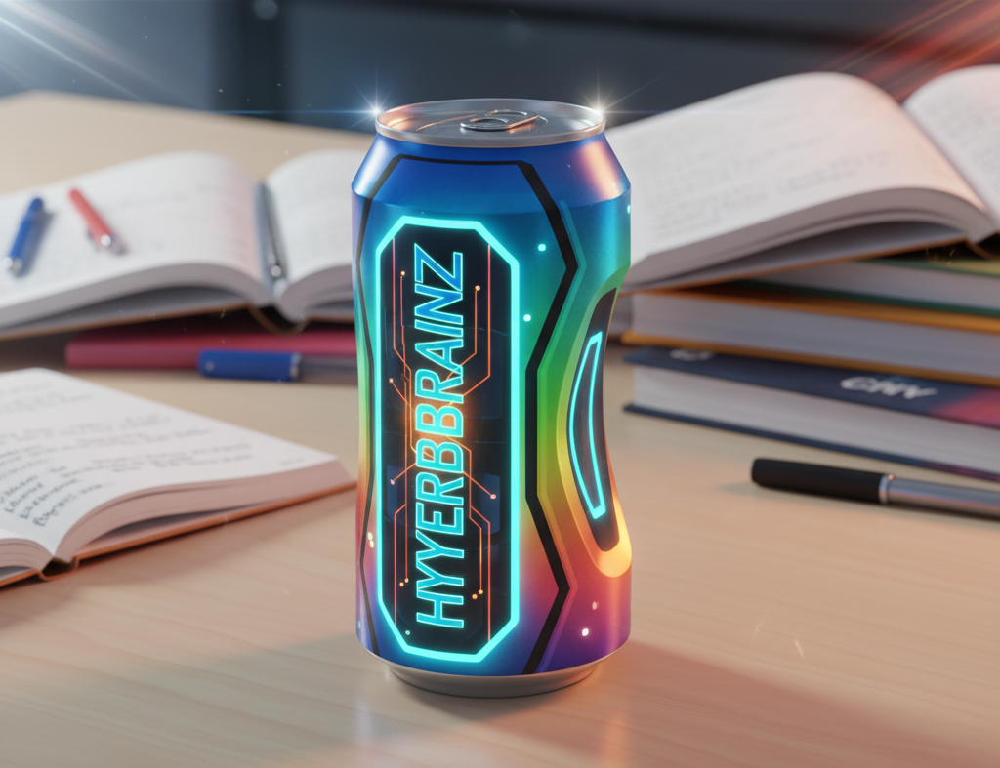

HyperBrainZ : la boisson miracle ?
Une étude « exclusive » affirme que la consommation régulière d’HyperBrainZ permettrait aux adolescents d’augmenter leur quotient intellectuel de 300 %.
L’annonce a été faite lors d’une conférence organisée par l’Institut Global des Neurosciences Appliquées™, une structure privée basée à Genève qui revendique plus de 15 ans d’expérience dans le domaine du « neuro-marketing ». Selon ses chercheurs, un panel de 1 200 volontaires, âgés de 14 à 18 ans, aurait montré une amélioration spectaculaire des performances scolaires après trois semaines de consommation quotidienne.
Le produit, lancé récemment sur le marché, se présente comme une boisson énergisante enrichie en « nano-molécules neuroactives ». Selon le communiqué de presse de la société, il suffirait de deux canettes par jour pour « booster » la mémoire, accélérer la vitesse de lecture et renforcer la créativité. Une publication préliminaire, annoncée dans la revue NeuroScience Advances, reste toutefois introuvable dans les bases de données scientifiques habituelles (PubMed, ScienceDirect).
Plusieurs experts interrogés par Actu Sûre Express se montrent prudents. Le Pr. Élise Morel, neuropsychologue à l’Université de Lyon, souligne que « parler d’une hausse de 300 % du QI n’a aucun sens scientifique. Le quotient intellectuel est un score standardisé : il ne peut pas tripler en quelques semaines, quelle que soit la substance ingérée ».
D’autres chercheurs rappellent que le financement de l’étude provient directement de la société NeuroBoost Corp, détentrice de la marque HyperBrainZ. L’absence de publication indépendante ou de validation par un comité de pairs soulève donc de sérieux doutes.
Malgré cela, la boisson connaît un succès commercial fulgurant. Dans plusieurs lycées d’Île-de-France, les distributeurs automatiques affichent déjà des ruptures de stock. Sur TikTok, le hashtag #HyperBrainZChallenge cumule plus de 30 millions de vues, alimentant la viralité du produit auprès des adolescents.
Du côté des autorités sanitaires, aucune alerte officielle n’a encore été émise. L’Agence européenne de sécurité des aliments (EFSA) a néanmoins déclaré « suivre le dossier avec attention » et appelle à la prudence face à des résultats jugés « trop spectaculaires pour être crédibles ».